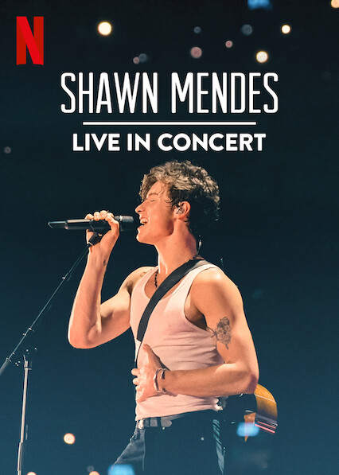

Shawn Peter Raul Mendes(Pickering, Ontario; 8 de agosto de 1998) es un cantante, compositor y modelo canadiense. Obtuvo seguidores en 2013, cuando comenzó a publicar versiones de canciones en la aplicación para compartir videos de Vine. Al año siguiente, llamó la atención del gerente artístico Andrew Gertler y del jefe de A&R de Island Records, Ziggy Chareton, lo que lo llevó a firmar un acuerdo con dicho sello discográfico. Desde entonces, lanzó tres álbumes de estudio, encabezó tres giras mundiales y recibió varios premios. En 2015, publicó su primer álbum Handwritten, que tuvo éxito en los Estados Unidos al entrar en la número 1 del Billboard 200, al igual que su sencillo «Stitches» que ingresó a las diez principales posiciones del Billboard Hot 100 en los Estados Unidos y Canadá, y la número uno en la lista de sencillos de Reino Unido.
Nacío el 8 de agosto de 1998 en Pickering,Ontario,Cánada
Algunos de sus grandes exitos son:
Actualmente cuenta con un documental en en Netflix en donde se relatan los momentos vividos en Shawn Mendes: The Tour (2019)
Cuenta con 4 albums, los cuales contienen canciones muy inspiradoras y romanticas, ideales para dedicar a un ser querido, algunas de mis favoritas son:
LA FUNDACIÓN SHAWN MENDES busca amplificar, empoderar y elevar a los jóvenes cambiadores, sus organizaciones y su trabajo. SMF trabaja para proporcionar una plataforma de aprendizaje para los jóvenes de hoy en día, y dar apoyo directo a las causas que les apasionan. Wonder Grants se otorga a jóvenes creadores de cambios y creativos que se preguntan al servicio de los demás y utilizan su voz, visión o habilidades para cambiar el mundo para mejor. Wonder Grants está diseñado para ayudar a jóvenes activistas con grandes ideas, pero insuficientes recursos, lanzar o completar proyectos innovadores en una variedad de campos, incluyendo música, cine, derechos humanos, educación, ciencia, medio ambiente y tecnología. Los importes de la subvención varían y se distribuyen de forma regular y receptiva.